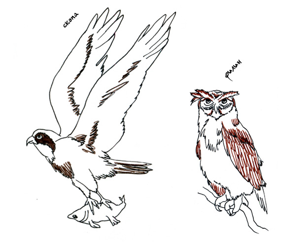
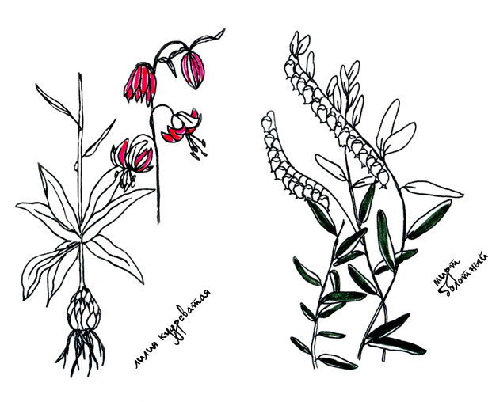

Ландшафт в гидрологическом заказнике «Выгонощанское» образовался во время ледникового периода. Озеро Выгонощанское — третий по площади естественный водоём Полесья, уступающий размерами только озёрам Червоное и Свитязское в Украине. Озеро — археологический памятник — мезолитическая стоянка. Это места гнездования и осенне-весеннего пролёта водоплавающих птиц. Осушая болото, которым питаются озёра, мы понижаем уровень вод и уменьшаем живую площадь.
Разновидность птиц достигает 250 видов и 58 видов млекопитающих. В озерах и реках обитает более 30 видов рыб. Возраст местных дубов достигает 600 лет.
Природный комплекс заказника имеет статус «Территории, важной для птиц» (ТВП) международного значения.
Редкие виды птиц исчисляются единицами: большая выпь40 самцов, большой подорлик3, коростель50, серый журавль23, дупель20, вертлявая камышёвка100, бородатая неясыть8 пар, заподноевропейский подвид глухаря20, несколько пар орлана-белохвоста, скопа и филин.

Заместитель министра природных ресурсов и охраны окружающей среды Анатолий Лис: «Нарушение состояния водно-болотных угодий является одной из причин глобального изменения климата. В Беларуси они занимают значительную часть территории и в стране уделяется большое внимание их сохранению в должном состоянии».

Рододендрон жёлтый— древний средиземноморский реликтовый вид растения, фиалка топяная, лилия кудреватая, мирт болотный.